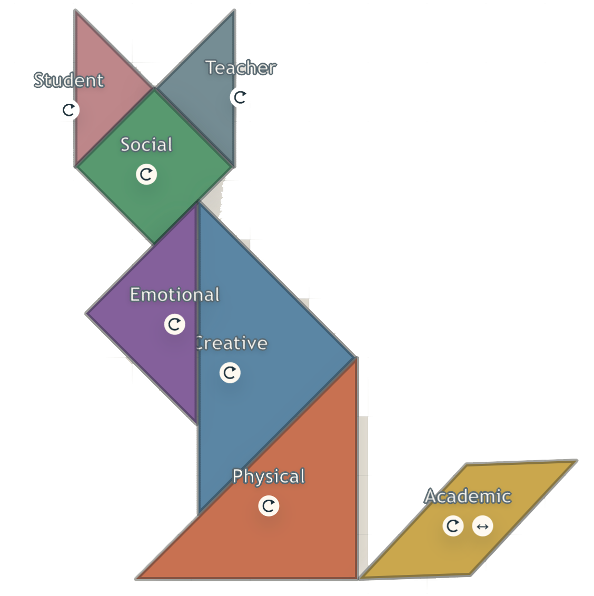

Every learner is one of a kind — not just in how they think, but in what they need to thrive. The five environments — physical, emotional, social, academic, and creative — are the domains that shape a student's learning experience: each one distinct, each one essential.
But environments don't work the same way for every child. Like tangrams, the same pieces can come together in completely different configurations — and each configuration is its own valid, complete picture.
There's no single "right" shape. There's only the shape that fits this learner.
Read about the five environments here, and click to find references and resources where you can learn more.
Once you're ready, click "Play." You can arrange, rotate, and reconfigure — and click on the student profiles to explore how the pieces come together differently for every student.
Physical
Physical — The physical environment is not just about comfort — it determines whether a student is spending energy regulating discomfort and stress, or is available to learn and grow. For twice-exceptional learners especially, the space should reduce sensory overload and distraction while still allowing for movement, flexibility, and access to materials that support exploration (Bridges 2e Center, 2019; Drexel University School of Education, n.d.; Willis, 2007; Horvath, 2021).
Emotional
Emotional — Belonging and acceptance are not peripheral to learning — they are central to it. When emotional needs go unmet, students shift toward avoidance or seeking validation rather than engaging in growth. Stress, anxiety, and fear of embarrassment interfere directly with cognition, attention, and memory, while low-stakes, supportive environments do the opposite. Students need a place where risk-taking is welcomed, not penalized (Willis, 2007; Amabile, 1998; Drexel University School of Education, n.d.; Bridges 2e Center, 2019; Anchor, 2011).
Social
Social — Belonging affects not only how students feel, but whether they invest effort and grow toward self-actualization. The social environment should support relationship-building, reduce isolation, and make neurodiversity an asset rather than a liability — through collaborative structures, interest-based groupings, and awareness of the impact of asynchronous development (Bridges 2e Center, 2019; Drexel University School of Education, n.d.; Amabile, 1998; Nesterak, 2020).
Academic
Academic — The intellectual environment determines whether learners encounter meaningful challenge and experience themselves as capable. Students learn best when instruction is relevant, curiosity-driven, and able to get through emotional and attentional filters — supported through open-ended assignments, alternatives to rote memorization, dual differentiation, and opportunities to solve problems in more than one way (Willis, 2007; Bridges 2e Center, 2019; Drexel University School of Education, n.d.; Horvath, 2021).
Creative
Creative — Expressing learning — not just acquiring knowledge — is necessary for growth. The creative environment should not be ornamental; it must make genuine room for unusual strengths, deep interests, original methods, and multiple forms of expression. This means focusing on process over product, protecting space for awe and exploration, and resisting the conditions known to suppress creativity: controlling structures, overly critical evaluation, and pressure toward a single right answer (Amabile, 1998; Robinson, 2006; Bridges 2e Center, 2019; Drexel University School of Education, n.d.; Willis, 2007).
HOW TO "PLAY"
Select a student to read about their learning profile.
Drag each shape into place over the tangram silhouette.
Click and drag the button to rotate or click to flip.

Click here to read more about how the five environments help students learn.